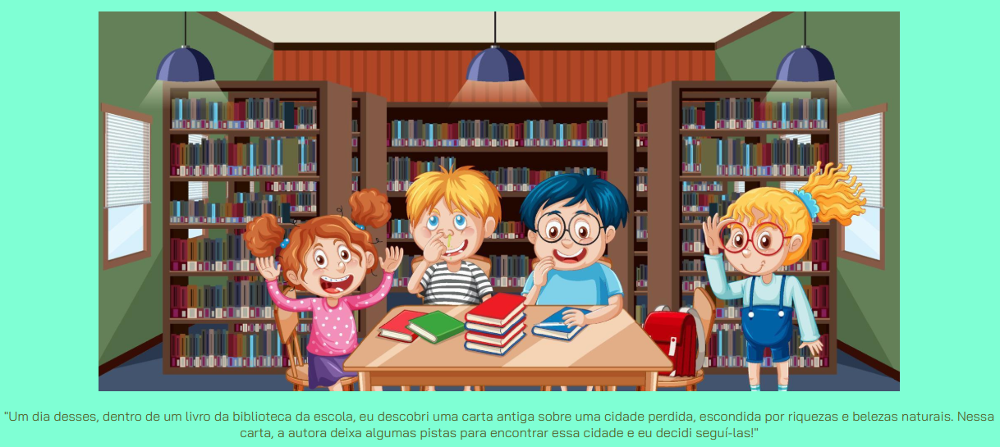
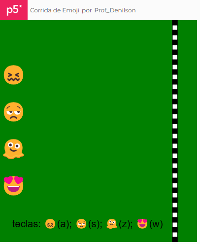
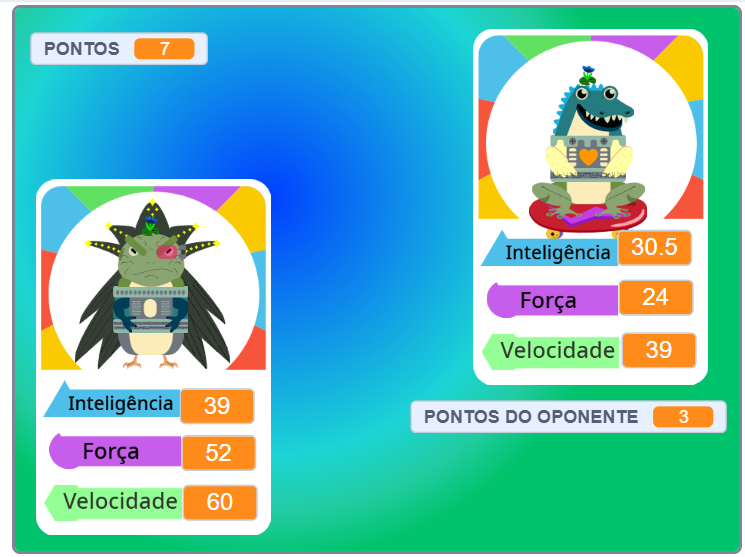

Em busca da cidade perdida!
Em busca de uma cidade perdida, um grupo de amigos sai numa aventura por cidades brasileiras... A página é estilizada com CSS e usa fontes externas do Google Fonts.

Corrida de emojis!
Uma emocionante corrida de emojis usando o teclado... As instruções são apresentadas na tela e no final uma surpresa! Desenvolvido em JavaScript utilizando o p5.js.

Super Trunfo!
Jogo de cartas aonde você irá disputar emocionantes batalhas. Use sua inteligência, sua força ou velocidade... Desenvolvido em Scratch.